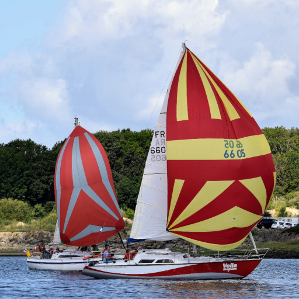

<div style="max-height: 600px; overflow-y: scroll;">
    <div style="display: grid; grid-template-columns: auto auto;">
        
        <div style="padding: 14px;">
            <h2>Saudade</h2>
            Ann&eacute;e 1975<br/>
            Motoris&eacute; &eacute;lectrique avec l'aide de la soci&eacute;t&eacute; VETUS
        </div>
    </div>
    <div>
        <h2>Le Bateau</h2>
        Super Arlequin
        <ul>
            <li>Constructeur : Chantier Qu&eacute;r&eacute;</li>
            <li>Longueur : 9,20 m</li>
            <li>Largeur : 2,92 m</li>
            <li>Tirant d'eau : 1,65 m</li>
        </ul>
    </div>
    <div>
        <h2>Plus d'infos...</h2>
        R&eacute;f&eacute;rent : L'equipe Voile Magazine.<br/>
        Email&nbsp;: <a href="mailto:fx.decrecy@voilemagazine.com">fx.decrecy@voilemagazine.com</a>
    </div>
</div>